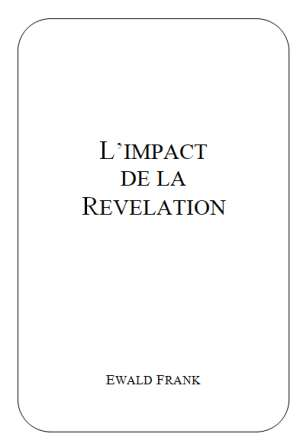
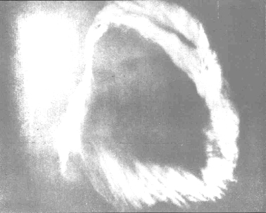

|
 |
Titre
original de louvrage: Auteur: Traduit de lallemand. Tout droit de reproduction,même partiel, est réservé. Editeur |
TABLE DES MATIERES Introduction Le chandelier d'or La divinité
LIMPACT DE LA REVELATION
Nous considérons comme un grand privilège de vous faire connaître, cher ami, les oeuvres puissantes de Dieu se rapportant à Son plan de salut qui sétend jusquà nos jours. Cest en parcourant les nombreux pays autour de notre globe que jai vu la nécessité de faire paraître cette brochure. En faisant cela, le seul but que nous visons est dexalter et de magnifier le Nom du Seigneur, et de recevoir la Parole de Dieu telle quElle sexprime Elle-même. Prophètes et apôtres ny sont mentionnés que pour mieux montrer comment laction divine agit au travers de leurs ministères, tels que nous les trouvons décrits dans lAncien et le Nouveau Testament.
Le ministère exceptionnel de feu le Révérend William Branham (1909-1965) a attiré lattention et suscité lintérêt des croyants de nombreuses églises et de gens de tous les milieux. Des contrées les plus éloignées du monde, nous avons été sollicités décrire un résumé de ce que Dieu a fait dans notre génération.
Ce passage des Ecritures: Eprouvez toutes choses sapplique aussi à cette brochure. Personne ne devrait ignorer cette exhortation de la Bible pour défendre sa propre doctrine, mais au contraire prendre la seule mesure valable: le témoignage entier des Ecritures, de la Genèse à lApocalypse.
Cela mérite dêtre considéré et médité dans un esprit de prière. Nous désirons relever et décrire les oeuvres et les actions de Dieu jusquà notre époque, dans lintention daider chacun à recevoir une compréhension plus profonde des choses que Dieu a destinées à leur croissance spirituelle. Cieux, écoutez! terre, prête loreille! Car lEternel parle! (Esa. 1.2).
DIEU ACHEVE SON OEUVRE
Dieu acheva au septième jour son oeuvre, quil avait faite; et il se reposa au septième jour de toute son oeuvre, quil avait faite (Gen. 2.2).
Ceci nest pas seulement un simple récit de la création, mais contient une vue prophétique de laccomplissement et du perfectionnement de lEglise-Epouse. Ainsi, à la fin du temps de la grâce du septième Age de lEglise, le Seigneur achève loeuvre dédification de Son peuple. Lapôtre Paul rend témoignage du fait de laccomplissement de loeuvre de Dieu dans Philippiens 1.6: Je suis persuadé que celui qui a commencé en vous cette bonne oeuvre la rendra parfaite pour le jour de Jésus-Christ.
Seule une Eglise-Epouse parfaite sera élevée à la gloire de prendre part au festin des noces de lAgneau: Heureux ceux qui sont appelés au festin de noces de lAgneau! (Apoc. 19.9).
Ensuite vient le Jour du Repos dans le Règne du Millénium dans le septième millénaire: Cest que, devant le Seigneur, un jour est comme mille ans, et mille ans sont comme un jour (2 Pier. 3.8). Bien que les incroyants disent: Où est la promesse de son avènement?, nous, croyants, savons que le Seigneur ne tarde pas dans laccomplissement de la promesse (2 Pier. 3.9). Depuis Adam, six mille ans se sont écoulés, mais, à cause des élus, ces jours seront abrégés (Mat. 24.22). Avec lautorité de la Parole de Dieu, nous pouvons dire que nous nous trouvons au tournant décisif de lhistoire du genre humain. LEternel des armées la juré, en disant: Oui, ce que jai décidé arrivera, ce que jai résolu saccomplira (Esa. 14.24). Quelle assurance dans ces paroles! Ce nest pas selon le plan des hommes, mais selon ce quIl propose, que Dieu agira. Son conseil embrasse toute la terre et Sa main sétend sur toutes les nations. LEternel des armées a pris cette résolution: qui sy opposera? Sa main est étendue: qui la détournera? (Esa. 14.27). Lapôtre Paul exprime sa confiance en disant: Car le Seigneur exécutera pleinement et promptement sur la terre ce quil a résolu (Rom. 9.28). Et parce que le Seigneur est prêt à accomplir promptement une oeuvre puissante, il est très important dêtre bien connecté (relié) à ce quIl est en train de faire. Plusieurs parlent des signes de la fin des temps, mais ne prennent pas garde au message de lheure présente. Voici, les premières choses se sont accomplies, et je vous en annonce de nouvelles; avant quelles arrivent, je vous les prédis (Esa. 42.9).
Le Seigneur Lui-même complétera Son oeuvre: Car lEternel se lèvera comme à la montagne de Peratsim, il sirritera comme dans la vallée de Gabaon, pour faire son oeuvre étrange, pour exécuter son travail, son travail inouï (Esa. 28.21). Loeuvre de Dieu paraît étrange aux yeux des hommes. Le Seigneur a tenu Sa Parole, et envoyé tous les messagers, y compris le dernier prophète des Nations. Maintenant, Lui-même est prêt pour terminer Son oeuvre. Car lEternel se lèvera comme à la montagne de Peratsim , ainsi dit la prophétie dEsaïe et pour notre temps cest le AINSI DIT LE SEIGNEUR.
Quarriva-t-il à cette montagne de Peratsim? Là, le Seigneur a fait une large brèche, exterminé lennemi et donné la victoire à Son peuple. David sécria: LEternel a dispersé mes ennemis devant moi, comme des eaux qui sécoulent. Cest pourquoi lon a donné à ce lieu le nom de Baal-Peratsim (lieu des ruptures) (2 Sam. 5.20). il sirritera comme dans la vallée de Gabaon, pour faire son oeuvre, son oeuvre étrange, pour exécuter son travail, son travail inouï (Esa. 28.21). Josué avait prié: Soleil, arrête-toi sur Gabaon, et toi, lune, sur la vallée dAjalon! (Jos. 10.12). Ces deux circonstances, auxquelles se réfère le prophète Esaïe, nous donnent un aperçu des puissants moyens mis en oeuvre par Dieu pour compléter Son oeuvre et ses étranges décrets (Hab. 1.5). Le Seigneur Lui-même est venu pour racheter Son Eglise, cest Lui-même qui la perfectionnera, et cest Lui-même qui la conduira dans Sa demeure. Au temps de la fin, Il frayera Ses voies avec puissance, Il renversera tous les obstacles, Il semparera de tous Ses ennemis pour en faire Son marchepied (Ps. 110.1-3). Puis Il terminera Son oeuvre.
Si vous demeurez dans ma parole, vous êtes vraiment mes disciples; vous connaîtrez la vérité, et la vérité vous affranchira (Jean 8.31). Tous les vrais disciples de Christ ont toujours eu lardent désir de se conformer à Sa Parole. La vérité de base que nous devons comprendre, cest que Dieu accomplit toutes choses selon les promesses de Sa Parole. Que cela soit dans la nature ou dans lunivers, dans les événements concernant les Juifs ou dans les choses sappliquant à lEglise du Dieu vivant, tout doit se dérouler et se manifester selon lordre et la loi de la Parole de Dieu.
Selon le plan de Dieu, deux choses, dans cette génération, suivent une voie parallèle: le retour des Juifs dans leur terre promise: Celui qui a dispersé Israël le rassemblera, et il le gardera comme le berger garde son troupeau (Jér. 31.10); de même, retentira lappel à lEpouse de revenir à la Parole de la Promesse: Sortez du milieu deux, et séparez-vous, dit le Seigneur; ne touchez pas à ce qui est impur et je vous accueillerai. Je serai pour vous un père, et vous serez pour moi des fils et des filles, dit le Seigneur tout-puissant (2 Cor. 6.17,18).
Tous les Juifs ne retourneront pas en Palestine, pas plus que tous les soi-disant croyants ne sortiront des organisations. Quoi donc? Ce quIsraël cherche, il ne la pas obtenu, tandis que les autres ont été endurcis (Rom. 11.7). La même chose sapplique à lEglise. Seuls, les élus prêteront garde à lappel final et sortiront des liens spirituels.
Israël est comparé à un figuier: Jai trouvé Israël comme des raisins dans le désert. Jai vu vos pères comme les premiers fruits dun figuier (Osée 9.10). Jésus a fait une importante déclaration dans la parabole du figuier se rapportant à Israël: Instruisez-vous par une comparaison tirée du figuier. Dès que ses branches deviennent tendres, et que les feuilles poussent, vous connaissez que lété est proche. De même, quand vous verrez toutes ces choses, sachez que le Fils de lhomme est proche, à la porte. Je vous le dis en vérité, cette génération ne passera point, que tout cela narrive (Mat. 24.32-34). Les Juifs, dispersés parmi les nations depuis plus de deux mille ans, sont maintenant rassemblés des extrémités de la terre. Le 19 mai 1948 la nation dIsraël a été officiellement établie. Selon les paroles de Jésus, la dernière génération aura le privilège de voir le rassemblement dIsraël dans sa patrie, dêtre témoins, et davoir part au déroulement de tous les événements que les enfants de Dieu ont attendus à travers les âges. Mais heureux sont vos yeux, parce quils voient, et vos oreilles, parce quelles entendent. Je vous le dis en vérité, beaucoup de prophètes et de justes ont désiré voir ce que vous voyez, et ne lont pas vu, entendre ce que vous entendez, et ne lont pas entendu (Mat. 13.16,17). Nous devons écarter toutes les idées préconçues, et être vigilants pour observer les événements bibliques en voie daccomplissement.
Il est également important de retracer la manière dagir de Dieu envers Son peuple depuis lorigine du temps! La communion du Seigneur avec le genre humain et Ses bénédictions étaient établies sur les promesses de Sa Parole. Aussi longtemps que lhomme gardait la Parole de Dieu, il en était protégé, et il restait dans Sa communion. Quiconque contredit ou fausse une vérité de la Bible, en tire un rapport, ou une interprétation particulière, celui-là se sépare de Dieu, perd le sens de léquilibre et de lharmonie de lEcriture tout entière. Toute Ecriture est inspirée de Dieu, et utile pour enseigner, pour convaincre, pour corriger, pour instruire dans la justice, afin que lhomme de Dieu soit accompli et propre à toute bonne oeuvre (2 Tim. 3.16,17). La chute, causée par linterprétation erronée de la Parole de Dieu, a séparé lhomme de la communion avec son Créateur. Mais, dès cet instant, il a été pourvu au salut de lhumanité déchue.
Selon la promesse de la Parole de Dieu, il y aurait un sacrifice suprême: le Rédempteur, la semence de la femme, qui écraserait la tête du serpent (Gen. 3.15).
La première interprétation particulière de lEcriture se produisit au jardin dEden. Pour ceux qui ne sont pas attachés au AINSI DIT LE SEIGNEUR, ce sera la chute par la fausse interprétation venant de Satan, le serpent ancien. Il est linstigateur de la première fausse interprétation de la Parole de Dieu quil perpétue à travers tous les âges. Il a fourvoyé ainsi même des gens sincères qui se sont laissés prendre à ces interprétations particulières, au lieu de sen tenir à la Parole originale de Dieu. Cest en vain quils mhonorent, en donnant des préceptes qui sont des commandements dhommes. Vous abandonnez le commandement de Dieu, et vous observez la tradition des hommes (Marc 7.7-9). Aussi devons-nous prendre garde au solennel avertissement de 2 Pierre 1.20: Sachant tout dabord vous-mêmes quaucune prophétie de lEcriture ne peut être lobjet dune interprétation particulière.
Des centaines de dénominations sont profondément enracinées dans des traditions humaines qui sont un mélange des portions de lEcriture avec leur propre interprétation rendant ainsi la Parole de Dieu sans effet pour eux. Il ne suffit pas davoir une connaissance charnelle de lEcriture il y faut la révélation du Saint-Esprit. Jésus disait à ceux qui, à lépoque, enseignaient lEcriture: Vous êtes dans lerreur, parce que vous ne comprenez ni les Ecritures, ni la puissance de Dieu (Mat. 22.29). Il ne suffit pas de parler du retour du Seigneur Jésus-Christ, mais nous devons nous préparer, et les promesses pour notre temps doivent être mises en évidence pour préparer et perfectionner lEpouse. Nous navons pas besoin de nouvelles traductions ou de nouvelles interprétations de lEcriture, mais nous avons un urgent besoin du AINSI DIT LE SEIGNEUR!. Même si, en quelques endroits, la Parole pour lheure que nous vivons est difficile à comprendre, nous devons nous abstenir de linterpréter Dieu étant Son propre Interprète. Pierre écrit, se référant à Paul: ce quil fait dans toutes ses lettres où il parle de ces choses, dans lesquelles il y a des points difficiles à comprendre, dont les personnes ignorantes et mal affermies tordent le sens, comme celui des autres Ecritures, pour leur propre ruine (2 Pier. 3.16).
Au premier avènement de Christ, tous les vrais croyants étaient appelés à se détacher des interprétations données par les hommes, afin de voir laccomplissement de la prophétie pour leur temps. La même chose arrive maintenant, avant le second avènement de Christ.
Jean était un homme envoyé de Dieu avec le message pour ce temps-là. Il vint pour servir de témoin, pour rendre témoignage à la lumière, afin que tous crussent par lui (Jean 1.7). Tous devaient parvenir à la connaissance de la vérité, non par un groupe, mais par le ministère du prophète envoyé de Dieu. Dieu na pas révélé Ses mystères aux scribes, mais à Son prophète, qui devait préparer la voie. Ceci se répète pour la seconde venue de Christ.
Le 11 juin 1933, frère Branham tenait un service de baptême dans la rivière Ohio. Au moment de baptiser la dix-septième personne, une lumière surnaturelle traversa les nuages et descendit sur lui, et une voix prononça ces paroles: «Comme Jean-Baptiste a été envoyé comme précurseur à la première venue de Christ, tu es envoyé avec un message comme précurseur de la seconde venue de Christ!» Une foule denviron 4 000 personnes fut saisie détonnement. Les uns sévanouissaient, les autres se mirent à prier, et quelques-uns, voyant cette manifestation du ciel, demandèrent: «Quest-ce que cela?». Dieu a parlé les élus sont sous limpact de ce ministère de restauration confirmé par Dieu. Ils saisissent alors la signification des paroles de Jésus: Si vous demeurez en moi, et que mes paroles demeurent en vous, demandez ce que vous voudrez, et cela vous sera accordé (Jean 15.7). Cette parole de Luc 24.45 devient une réalité pour eux: Alors, il leur ouvrit lesprit, afin quils comprissent les Ecritures. Toute Parole de Dieu est labsolue vérité inspirée par le Saint-Esprit, et elle apporte la vie. Toute interprétation particulière de la Parole est mensonge; elle sépare de Dieu et nous jette dans la mort spirituelle. Il est écrit: Lhomme ne vivra pas de pain seulement, mais de toute parole qui sort de la bouche de Dieu (Mat. 4.4).
LA VOIX DE DIEU AUJOURDHUI
En ce moment même, Jésus tressaillit de joie par le Saint-Esprit, et il dit: Je te loue, Père, Seigneur du ciel et de la terre, de ce que tu as caché ces choses aux sages et aux intelligents, et de ce que tu les as révélées aux enfants. Oui, Père, je te loue de ce que tu las voulu ainsi (Luc 10.21).
A plusieurs reprises, Dieu, de Son trône, révèle tout à nouveau Sa Parole et ouvre les yeux de Son peuple. Ces révélations produisent en lui une grande joie et des louanges envers le Dieu des Cieux pour tout ce quIl a fait car ce ne sont pas la chair et le sang qui tont révélé cela, mais cest mon Père qui est dans les cieux (Mat. 16.17). Le plan entier du salut repose sur la révélation spirituelle, source de la foi véritable en lunique vrai Dieu. Abel avait la révélation quil devait y avoir effusion du sang de lagneau, et non présentation des fruits des champs pour être réconcilié avec Dieu. Par la foi, il apporta un plus excellent sacrifice que Caïn. Les vrais enfants de Dieu ont toujours été sous limpact de la révélation, et ont reconnu leur aujourd'hui, et ont perçu la voix de Dieu. Dans Hébreux 4.7, nous lisons: Aujourdhui, si vous entendez sa voix, nendurcissez pas vos coeurs. Il y avait un aujourdhui au temps de Noé, de Moïse et dAbraham, etc. Jésus se réfère à laujourdhui de son temps, en disant: Aujourdhui, cette parole de lEcriture, que vous venez dentendre, est accomplie (Luc 4.21).
Il semble que les gens reconnaissent ce que Dieu a fait dans le passé et portent leur regard sur ce quIl va faire dans lavenir, mais ce quIl est en train de faire aujourdhui leur échappe. LEcriture ne dit pas: Si hier vous avez entendu sa voix, ou si demain, vous entendez sa voix! mais Elle dit clairement: Aujourdhui, si vous entendez sa voix .
En général, chacun aime à se tenir au courant des progrès de la science en notre temps; mais quen est-il des progrès spirituels? Trop de Chrétiens vivent dans le passé, remontant aux jours de la Réforme et autres mouvements de réveil, comme si Dieu ne faisait rien aujourdhui. Ce faisant, ils manquent le contact qui les mettrait en rapport avec ce que Dieu Se prépare à faire. Jésus dit à ceux qui ne portaient pas de fruit en leur temps: Cest pourquoi je vous le dis, le royaume de Dieu vous sera enlevé, et sera donné à une nation qui en rendra les fruits (Mat. 21.43).
Lheure est avancée, la venue du Seigneur est à la porte. Nous ne pouvons pas nous permettre davoir notre propre conception des choses de Dieu à une époque aussi grave. Placés face à la Parole révélée pour aujourdhui, nous devons être vigilants et prendre garde aux signes de notre temps. Nous devons reconnaître et trouver le contact avec ce quIl fait aujourdhui, sinon Il ôtera le chandelier qui ne donne pas de lumière (Apoc. 2.5).
A chaque réveil, cest la minorité spirituelle qui embrasse et entretient la prochaine action de Dieu, laquelle les conduira à une plus profonde connaissance de la Parole. Les croyants charnels sont satisfaits de létat de stagnation où ils sont plongés, et se contentent de former de nouvelles dénominations, parce quils ont manqué de reconnaître leur aujourdhui.
Au tournant du siècle, le Saint-Esprit a été répandu sur le reste des croyants. Les croyants charnels qui ne suivaient pas le mouvement de lEsprit affirmèrent que les dons de lEsprit et leurs manifestations nétaient pas de Dieu. Par conséquent, les feux de lEsprit étaient à nouveau étouffés. De nouvelles dénominations furent organisées par les hommes qui se croyaient spirituels, ne réalisant pas quils tombaient dans le même piège auquel ils venaient à peine déchapper. Ainsi, ils se coupaient de la source de vie, de celle même dont jaillissent les bénédictions de Dieu. Le résultat de cela, cest quils sont en opposition aux promesses de la Parole de Dieu pour notre aujourd'hui. Jésus dit: Mes brebis entendent ma voix; je les connais et elles me suivent (Jean 10.27).
LE MINISTERE DUN PROPHETE
Le Seigneur a toujours envoyé Ses prophètes et messagers pour ramener les gens à la Parole originale. LEternel, le Dieu de leurs pères, donna de bonne heure à ses envoyés la mission de les avertir, car il voulait épargner son peuple et sa propre demeure (2 Chr. 36.15).
La vraie vie de lEsprit ne se trouve que dans la Parole originale; toute interprétation particulière jette les gens dans la mort spirituelle. Jésus dit: Cest lEsprit qui vivifie; la chair ne sert de rien. Les paroles que je vous ai dites sont esprit et vie (Jean 6.63).
Dieu Se sert du ministère dun prophète pour faire connaître à Ses enfants les promesses pour leur aujourdhui. Abraham, Moïse, Elie, Jean-Baptiste et bien dautres prophètes étaient chargés dune telle mission pour leur époque. Dieu est lié à Ses promesses. Et Il a promis: Car le Seigneur, lEternel, ne fait rien sans avoir révélé son secret à ses serviteurs les prophètes (Amos 3.7). Selon Nombres 12.6, les vrais prophètes ont accès en des domaines inaccessibles aux autres, et peuvent y pénétrer. Ecoutez bien mes paroles! Lorsquil y aura parmi vous un prophète, cest dans une vision que moi, lEternel, je me révélerai à lui, cest dans un songe que je lui parlerai. A travers tous les âges, la Parole du Seigneur concernant Son plan de rédemption est parvenue aux prophètes principaux.
Dieu a révélé Sa Parole à Son prophète avant le déluge: Mais Noé trouva grâce aux yeux de lEternel . Et Dieu dit à Noé: Fais-toi une arche Voici comment tu la feras . Les activités de Noé paraissaient bien étranges aux yeux des gens. Il fut incompris, moqué, exposé aux risées, mais il agit selon lautorité de la Parole qui sétait fait connaître à lui. Dieu avait décidé de mettre fin à toute chair, parce que la descendance bénie de Seth sétait mêlée à celle de Caïn. Dieu regretta davoir fait lhomme et le jugement tomba.
Le plus grand mélange de tous les temps a lieu et arrive à son point culminant maintenant, au Conseil Mondial des Eglises. Mais, juste avant que la porte ne se ferme et que le jugement ne frappe, Dieu a envoyé un puissant prophète avec lappel final: Sortez du milieu delle, mon peuple, afin que vous ne participiez point à ses péchés, et que vous nayez point de part à ses fléaux (Apoc. 18.4).
Dieu avait un prophète auquel Il confia directement une mission et un message avant que le jugement ne frappe la terre en ce temps-là. Cest ce que fit Noé: il exécuta tout ce que Dieu avait ordonné (Gen. 6.22). Jésus dit à ses disciples: Ce qui arriva du temps de Noé arrivera de même aux jours du Fils de lhomme (Luc 17.26). De nombreux chrétiens comparent la méchanceté de cette génération à celle de la nôtre. Mais pour avoir un tableau complet, nous ne devons pas seulement concentrer notre regard sur les iniquités des incroyants, mais plutôt sur les promesses faites aux croyants. Les gens mettaient en question la mission de Noé, du fait quil était le seul auquel la Parole et la Volonté de Dieu étaient révélées. Plusieurs peuvent penser la même chose aujourdhui mais le Seigneur Dieu révèle Ses secrets à Ses serviteurs les prophètes.
Abraham était le prophète de Dieu au temps de la destruction de Sodome et de Gomorrhe. Plusieurs lappellent le Père de la foi; mais il faudrait mettre laccent sur le fait que sa foi était ancrée dans la Parole de Dieu promise. Dans le récit de sa vie, nous lisons: Il ne douta point, par incrédulité, au sujet de la promesse de Dieu; mais il fut fortifié par la foi, donnant gloire à Dieu (Rom. 4.20). La foi scripturaire ne peut être trouvée que là où la Parole de la promesse a été reçue. Là, nous ne trouvons aucune hésitation par incrédulité, ou de mise en question, à savoir comment cela se passera, mais au contraire, il y aura une ferme conviction que Dieu est capable de tenir Sa Parole: ayant la pleine conviction que ce quil promet, il peut aussi laccomplir (Rom. 4.21).
Jésus-Christ, notre Seigneur, a aussi fait la constatation: Comme il en fut au temps de Sodome, ainsi en sera-t-il au jour de la révélation du Fils de lhomme. Ici, à nouveau, nous pouvons mettre en parallèle ce temps-là avec le nôtre. Plusieurs comparent les péchés de Sodome aux péchés de notre temps, mais manquent de voir limportance vitale du ministère prophétique. Les élus de ce temps-là nétaient pas dans Sodome et ne participaient pas à la perversité qui sy trouvait. Ils étaient avec Abraham, le vrai prophète de Dieu, et reçurent le dernier signe surnaturel avant la destruction de Sodome. Selon Genèse 18, le Seigneur visita Abraham et lui confirma Sa promesse. Il en est de même pour la semence royale dAbraham dans cette génération, comme ce fut le cas pour les élus du temps de la première venue de Christ. Le dernier signe surnaturel, le don de discernement, a été manifesté à Abraham, aux Juifs du temps de Christ, et répété à nouveau à la fin de la dispensation du temps des Gentils.
Sara se trouvait dans la tente, écoutant ce que le Seigneur disait à Abraham, et elle se mit à rire en elle-même. Ainsi donc, les pensées de son coeur furent révélées. pourquoi donc Sara a-t-elle ri? (v. 13). Cest seulement en réalisant que le don de discernement a été manifesté au temps dAbraham, et par le ministère de Christ, que nous pouvons comprendre que le même Seigneur a fait les mêmes choses dans notre génération. Lorsque André amena son frère à Jésus, Il le regarda et dit: Tu es Simon, le fils de Jonas (Jean 1.42). Dans le même chapitre, nous lisons au sujet de Nathanaël que lorsquil fut conduit à Christ par Philippe, le Seigneur lui dit: Voici vraiment un Israélite, dans lequel il ny a point de fraude (Jean 1.47). Nathanaël, pris par surprise, demanda: Doù me connais-tu?. La réponse du Maître fut: Avant que Philippe tappelât, quand tu étais sous le figuier, je tai vu (Jean 1.48). Nathanaël repartit et lui dit Rabbi, tu es le Fils de Dieu, tu es le roi dIsraël (Jean 1.49).
La vie de la femme Samaritaine fut révélée par Jésus au puits. Seigneur, lui dit la Femme, je vois que tu es prophète Je sais que le Messie doit venir (celui quon appelle Christ); quand il sera venu, il nous annoncera toutes choses. Jésus lui dit: Je le suis, moi qui te parle (Jean 4.19-29). La vraie semence de Dieu nest pas choquée par le don de discernement. Ils nont jamais appelé le Seigneur Béelzébul ou suspecté dêtre un diseur de bonne aventure. Ils reconnurent leur Sauveur dans Son ministère prophétique. Cest cet impact qui forçait les gens à prendre leur décision là, sur-le-champ. Ceux qui trouvèrent la connexion à loeuvre de Dieu de ce temps-là, furent bénis, et ils reconnurent le message et le ministère pour leur aujourdhui. Les autres endurcirent leur coeur et proclamèrent que cela venait du diable.
Maintenant, dans cette dernière génération, nous sommes confrontés au même don prophétique du discernement, qui sest répété dans le ministère de frère Branham. Des gens sans nombre ont été sauvés, et des dizaines de milliers ont été guéris de toutes sortes de maux. Les aveugles voyaient, les boiteux marchaient, la parole et louïe étaient redonnées aux sourds-muets, les morts ressuscitaient et même des miracles de création se produisaient. Jean 14.12 saccomplit littéralement: celui qui croit en moi fera aussi les oeuvres que je fais, et il en fera même de plus grandes .
Lauditoire était subjugué et rempli de respect, lorsque le don de discernement était à loeuvre. Pendant que frère Branham priait pour quelquun, il voyait en vision la maladie qui lavait frappé, lui ou les siens, la région, la ville, parfois même la rue et ladresse doù ils venaient, et même leurs besoins du moment lui étaient révélés. Par révélation divine, il pouvait leur dire les secrets de leur coeur. Car la parole de Dieu est vivante et efficace, plus tranchante quune épée quelconque à deux tranchants, pénétrante jusqu'à partager âme et esprit, jointures et moelles; elle juge les sentiments et les pensées du coeur (Héb. 4.12). Pas une fois, le Dieu Tout-Puissant ne manqua de justifier Sa parole et Son prophète.
Le Seigneur se souvint de Son alliance et chargea Moïse de délivrer Son peuple de ses liens. Selon la promesse de Dieu à Abraham, ils devaient sortir dEgypte après 400 ans (Gen. 15.3). Lorsque le temps de laccomplissement arriva, Il révéla Sa Parole à Moïse, Son serviteur et prophète pour ces jours-là. Moïse sétait attaché à la Parole de la promesse, et Dieu était avec lui à chaque pas du chemin. Non seulement il passa par lexpérience du buisson ardent, mais Dieu lui parlait continuellement et face à face de la Colonne de Feu. Il ny avait aucune incertitude ni aucun doute sur son ministère. Son action reposait sur la Parole inébranlable, il avait le AINSI DIT LE SEIGNEUR! pour son temps. Quelle bénédiction pour tous ceux qui acceptent ce que Dieu dit dans 2 Chronique 20.20: Confiez-vous en lEternel, votre Dieu, et vous serez affermis; confiez-vous en ses prophètes, et vous réussirez.
Aussi longtemps que les enfants dIsraël restaient attachés à la Parole de Dieu, ils étaient bénis et entourés de soins particuliers: Dans ton immense miséricorde, tu ne les abandonnas pas au désert, et la colonne de nuée ne cessa point de les guider le jour dans leur chemin, ni la colonne de feu de les éclairer la nuit dans le chemin quils avaient à suivre. Tu leur donnas ton bon esprit pour les rendre sages, tu ne refusas point ta manne à leur bouche, tu leur fournis de leau pour leur soif (Néh. 9.19,20).
Contrairement à la Parole révélée pour ce temps, Balaam les fit trébucher en les enseignant pour quils mangeassent des viandes sacrifiées aux idoles et quils se livrassent à limpudicité (Apoc. 2.14). Le jugement de Dieu tomba sur eux de sorte quil en tomba vingt-trois mille en un seul jour (1 Cor. 10.8).
Dans 2 Timothée 3.1-9, Paul, poussé par le Saint-Esprit, écrit ce qui arriverait dans les derniers jours: De même que Jannès et Jambrès sopposèrent à Moïse, de même ces hommes sopposent à la vérité, étant corrompus dentendement, réprouvés en ce qui concerne la foi. LEcriture ne peut pas être violée. Lorsque lAnge du Seigneur transmit au frère Branham son ordre de mission, il lui dit: «De même que Moïse reçut deux signes, à toi aussi, il test donné deux signes. Sils ne veulent pas croire au premier, ils croiront au second». Ainsi que Jannès et Jambrès sopposèrent à Moïse, de même des hommes sélèveront pour résister à la Parole révélée de Dieu au travers du ministère prophétique. Ces choses doivent arriver. Mais ils ne feront pas de plus grands progrès, car leur folie sera manifeste pour tous, comme le fut celle de ces deux hommes (2 Tim. 3.9).
Tout véritable serviteur de Dieu sattachera fortement à la Parole révélée de Dieu, malgré toutes les tromperies de notre temps. Quil y ait ici un Balaam avec un enseignement contraire, ou des Jannès et des Jambrès avec des signes et des prodiges, loeuvre de Dieu doit saccomplir parmi les élus, parce quils ne peuvent être trompés.
Sous Josué, les enfants dIsraël marchèrent selon la Parole de leur temps, et arrivèrent au pays de la promesse. Ainsi, le Seigneur accomplit Sa Parole: Tout lieu que foulera la plante de votre pied, je vous le donne, comme je lai dit à Moïse (Jos. 1.3). Oh, puissions-nous comprendre que tous les espoirs et tous les efforts sont vains, sils ne sappuient pas sur la promesse de la Parole de Dieu! Même tous nos efforts dans notre course sont vains, si nous ne gardons en vue le but indiqué dans la Parole. Et lathlète nest pas couronné, sil na pas combattu suivant les règles (2 Tim. 2.5). Ne savez-vous pas que ceux qui courent dans le stade courent tous, mais quun seul remporte le prix? Courez de manière à le remporter. Les masses de la chrétienté sont séduites et maintenues en de fausses espérances, qui aboutiront finalement à une déception totale, parce quelles nont pas reconnu la promesse de la Parole pour leur aujourdhui.
Nous connaissons tous assez bien le puissant ministère dElie, mais réalisons-nous bien quil était placé sous lautorité directe du Dieu Tout-Puissant? Il prit douze pierres, représentant les douze tribus dIsraël, pour redresser lautel du Seigneur. Au moment de la présentation de loffrande, Elie, le prophète, savança et dit: Eternel, Dieu dAbraham, dIsaac et dIsraël: que lon sache aujourdhui que tu es Dieu en Israël, que je suis ton serviteur, et que jai fait toutes ces choses par ta Parole! (1 Rois 18.36).
Maintenant, cest lheure du soir pour lEglise. La promesse de Zacharie 14.7 mais vers le soir, la lumière paraîtra devait saccomplir avant que ne sonne minuit. Et nous tenons pour dautant plus certaine la parole prophétique, à laquelle vous faites bien de prêter attention, comme à une lampe qui brille dans un lieu obscur (2 Pier. 1.19). Par la révélation de la Parole de prophétie, la lumière éclata. Les enfants de Dieu furent ramenés à la foi des pères apostoliques à la doctrine des douze apôtres.
Les élus de tous les âges étaient instruits de leur aujourdhui, et pouvaient dire de tout leur coeur avec Salomon: Béni soit lEternel, qui a donné du repos à son peuple dIsraël, selon toutes ses promesses! De toutes les bonnes paroles quil avait prononcées par Moïse, son serviteur, aucune nest restée sans effet. On ninsistera jamais avec assez de force sur limportance de ce que signifie la révélation de la Parole de Dieu.
Tous les vrais prophètes ne pouvaient dire AINSI DIT LE SEIGNEUR! quaprès que Dieu leur eût parlé. Aucune personne, quelle soit roi, ministre ou prêtre, ni aucune circonstance que ce soit, ne pouvaient les influencer. Ceci est confirmé par la réponse donnée par le prophète Michée au messager qui demandait: que ta parole soit donc comme la parole de chacun deux! annonce du bien! Michée répondit: LEternel est vivant, jannoncerai ce que dira mon Dieu (2 Chr. 18.12).
Les quatre cents nétaient pas des prophètes de Dieu, mais des prophètes dIsraël. Parce quils navaient pas prêté garde à la Parole du Seigneur annoncée par le prophète Elie, ils tombèrent par la fausse interprétation qui leur fut donnée par un esprit menteur: lEternel a mis un esprit de mensonge dans la bouche de tes prophètes qui sont là (2 Chr. 18.19-22). Le Seigneur ne dit pas de mes prophètes, en parlant des quatre cents prêtres, mais de tes prophètes. Les vrais prophètes de Dieu ne peuvent être trompés par un esprit de mensonge, parce quils sont complètement sous le contrôle de lEsprit de Vérité le Saint-Esprit. Souvenons-nous des avertissements donnés dans 2 Thessaloniciens 2.10-11: ceux qui périssent, parce quils nont pas reçu lamour de la vérité pour être sauvés. Aussi Dieu leur envoie une puissance dégarement, pour quils croient au mensonge. Quiconque ne croit pas la vérité de la Parole de Dieu est livré à une puissance de tromperie qui lui fait croire au mensonge cest la fausse interprétation, telle quelle a son origine dans le Jardin dEden. LEsprit de Vérité ne nous éloigne pas de la Parole de Dieu, mais nous conduit dans toute la vérité, et nous annoncera même les choses à venir, selon Jean 16.13. Quand le consolateur sera venu, lEsprit de vérité, il vous conduira dans toute la vérité; car il ne parlera pas de lui-même, mais il dira tout ce quil aura entendu, et il vous annoncera les choses à venir.
LA PROMESSE POUR NOTRE TEMPS
Car, pour ce qui concerne toutes les promesses de Dieu, cest en lui quest le oui; cest pourquoi encore lAmen par lui est prononcé par nous à la gloire de Dieu (2 Cor. 1.20). Pierre fut leur porte-parole au jour de la Pentecôte, après quils eurent reçu la promesse. La multitude était dans létonnement et la surprise, et ils se disaient les uns aux autres: «Que cela signifie-t-il?». Pierre, poussé par le Saint-Esprit, leur donna la réponse scripturaire, selon Actes 2.16: Mais cest ici ce qui a été dit par le prophète Joël . Lapôtre se réfère fréquemment aux prophéties de lAncien Testament. Conduit par le Saint-Esprit, il prédit aussi ce qui aurait lieu avant le retour du Seigneur Jésus-Christ, que le ciel doit recevoir jusquau temps du rétablissement de toutes choses, dont Dieu a parlé anciennement par la bouche de ses saints prophètes (Act. 3.21). Sur la base de cette prophétie, toutes choses doivent être rétablies selon la Bible et les véritables enseignements et coutumes de lEglise primitive, avant que Christ ne revienne.
Le Seigneur Lui-même nous parle de cette restauration, et nous dit comment cela se produirait: Il est vrai quElie doit revenir dabord, et rétablir toute choses (Mat. 17.11). Cette promesse a été donnée pour le temps où le ministère de Jean serait accompli et où il serait parti pour être glorifié! Notez que cette parole de Jésus coïncide avec ce qui est dit dans Malachie 4.5: Voici, je vous enverrai Elie, le prophète, avant que le jour de lEternel arrive. Cest là la promesse pour notre temps. Je vous remplacerai les années (Joël 2.25). Le message pour cette heure est le message dune complète restauration.
LERE DU NOUVEAU TESTAMENT
Beaucoup de Chrétiens négligent de lire lAncien Testament, ne réalisant pas quil trouve son accomplissement dans le Nouveau. Cent neuf (109) prédictions de lAncien Testament concernant le Christ saccomplirent littéralement à Son premier avènement. Toute doctrine dans le Nouveau Testament est basée sur le AINSI DIT LE SEIGNEUR de la parole prophétique. Il est incompréhensible que les enseignants de la Bible et les conducteurs religieux de ce temps-là ne se soient pas rendu compte de laccomplissement même de lEcriture quils enseignaient aux autres. Ils croyaient et enseignaient selon leur propre interprétation, et sattendaient à ce que Dieu les accomplissent en conséquence. Se pourrait-il que lhistoire se répète dans cette génération? On tient de grandes et impressionnantes conventions et on parle beaucoup du prochain retour du Seigneur Jésus-Christ, alors que la Parole révélée pour cette heure est rejetée.
A plusieurs reprises, les apôtres qui ont écrit le Nouveau Testament se réfèrent et reviennent à ce que les prophètes avaient dit dans lAncien. Dans le Nouveau Testament, nous trouvons huit cent quarante-cinq (845) citations reprises de lAncien Testament. Lun ne peut être séparé de lautre. Le dessein de Dieu à légard du genre humain a été annoncé et préfiguré dans lAncien Testament, et trouve son accomplissement à travers la période du Nouveau Testament: Vous avez été édifiés sur le fondement des apôtres et des prophètes, Jésus-Christ étant lui-même la pierre angulaire (Eph. 2.20).
Selon la promesse de la Parole pour ce temps-là, Dieu envoya Jean, le précurseur de la première venue de Christ. Les théologiens ne comprirent pas, ils furent scandalisés et sélevèrent contre lui. Ils restaient attachés à leurs propres connaissances. Mais tous ceux qui firent abnégation deux-mêmes et se détachèrent de lenseignement antérieur étaient prêts à recevoir le messager de Dieu avec son message. Le commun du peuple lécoutait avec joie et nétait pas choqué par sa façon de parler. Celui à qui appartient lépouse, cest lépoux, mais lami de lépoux, qui se tient là et lentend, éprouve une grande joie à cause de la voix de lépoux: aussi cette joie, qui est la mienne, est parfaite (Jean 3.29).
Réalisons-nous que nous vivons un âge prophétique, et que beaucoup de paroles de lEcriture vont se dérouler sous nos yeux mêmes? Reconnaissons-nous laujourdhui de notre visitation?
Le ministère de Jean-Baptiste était laccomplissement dEsaïe 40.3-5 et de Malachie 3.1, ainsi que cela est confirmé dans lEvangile de Marc. Commencement de lEvangile de Jésus-Christ, Fils de Dieu. Selon ce qui est écrit dans Esaïe, le prophète: Voici, jenvoie devant toi mon messager, qui préparera ton chemin; cest la voix de celui qui crie dans le désert: Préparez le chemin du Seigneur, aplanissez ses sentiers (Marc 1.1-3).
Se référant au ministère de Jean-Baptiste, lange du Seigneur dit à Zacharie: il marchera devant Dieu avec lesprit et la puissance dElie, pour ramener les coeurs des pères vers les enfants, et les rebelles à la sagesse des justes, afin de préparer au Seigneur un peuple bien disposé (Luc 1.17). Lange connaissait exactement le passage de lEcriture qui devait saccomplir par le ministère de Jean. Il ne dit pas quil était lElie qui devait venir avant ce jour grand et redoutable. Il ne prit que le passage suivant de Malachie 4.6: Il ramènera le coeur des pères à leurs enfants qui trouve son accomplissement à la première venue de Christ, alors que la deuxième partie de ce verset ne saccomplira quà la seconde venue de Christ, à la fin du temps de la grâce.
Parce quune part de la prophétie se rapportant à Elie devait saccomplir avant ce jour grand et redoutable, par le ministère de Jean, Jésus lappela aussi Elie: si vous voulez le comprendre, cest lui qui est lElie qui devait venir (Mat. 11.14). Mais je vous dis quElie est déjà venu, quils ne lont pas reconnu, et quils lont traité comme ils lont voulu (Mat. 17.12).
Voilà que bientôt deux mille ans ont passé, et que ce jour grand et redoutable est encore devant nous, ainsi que le dit lEcriture: Voici, le jour de lEternel arrive, jour cruel, jour de colère et dardente fureur, qui réduira la terre en solitude, et en exterminera les pécheurs (Esa. 13.9). Le soleil se changera en ténèbres, et la lune en sang, avant larrivée du jour de lEternel, de ce jour grand et terrible (Joël 2.31).
Que chacun le sache, comme il est dit dans Malachie 4.5-6: Voici, je vous enverrai Elie, le prophète, avant que le jour de lEternel arrive, ce jour grand et redoutable. Il ramènera le coeur des pères à leurs enfants, et le coeur des enfants à leurs pères, de peur que je ne vienne frapper le pays dinterdit. En Luc 1.17, nous trouvons le même mystère quen Luc 4.19, où Jésus-Christ sarrêta au milieu du verset et se référa à pour publier une année de grâce du Seigneur, et non pas au jour de la vengeance. La deuxième partie des deux prophéties devait saccomplir à la fin de la dispensation du temps des Nations, juste avant le jour de la vengeance, ce jour grand et redoutable.
Dans Matthieu 11.10, Jésus identifie Jean-Baptiste à Malachie 3.1, et non pas à Malachie 4.5; donc Voici, jenvoie mon messager devant ta face. On demandait à Jean-Baptiste, alors au faîte de son ministère: Es-tu Elie? Et il dit: Je ne le suis point (Jean 1.21). Jean savait exactement quelle portion de lEcriture se rapportait à son ministère.
Le témoignage du Seigneur Jésus, celui de lange, ceux de Jean-Baptiste et de Marc sont clairs et explicites. Cela nous montre avec quelle harmonie les écrivains et les orateurs du Nouveau Testament collaboraient avec ceux de lAncien. Parce quils étaient conduits par le Saint-Esprit, ils reconnaissaient pleinement laccomplissement des Ecritures.
LE CHANDELIER DOR
Le dernier livre de la Bible, de nature prophétique, contient des informations essentielles sur le cours entier de lhistoire de léglise, et nous donne une vue profonde du sens des prophéties, et de laccomplissement de loeuvre de Dieu. Il souvre par ces mots: Révélation de Jésus-Christ, que Dieu lui a donnée (à Jean) pour montrer à ses serviteurs les choses qui doivent arriver bientôt .
Ici même, nous sommes amenés dans le Saint des saints, pour recevoir la révélation finale de Jésus-Christ. Oh, quel saisissement ce sera pour tous ceux qui verront Jésus dans Sa glorieuse apparence, comme Jean Le vit: Il avait dans sa main droite sept étoiles. De sa bouche sortait une épée aiguë à deux tranchants, et son visage était comme le soleil lorsquil brille dans sa force. Oh, quelle expérience bouleversante cela dut être pour Jean, lorsquen présence de laspect majestueux de son bien-aimé Sauveur, il tomba comme mort à ses pieds! Il posa sur moi sa main droite, en disant: Ne crains point! Je suis le premier et le dernier, le Vivant. Jétais mort, et voici, je suis vivant aux siècles des siècles. Je tiens les clefs de la mort et du séjour des morts (Apoc. 1.17,18). Revenons aux paroles de Jean: Je me retournai pour connaître quelle était la voix qui me parlait. Et après mêtre retourné, je vis sept chandeliers dor, et, au milieu des sept chandeliers, quelquun qui ressemblait à un fils dhomme (Apoc. 1.12,13). Le mystère des sept étoiles est révélé à Jean: Les sept étoiles sont les anges des sept églises, et les sept chandeliers sont les sept églises (Apoc. 1.20).
Les messages étaient adressés aux sept églises en Asie parce quelles caractérisaient les sept âges de léglise à venir. Ils étaient donc de nature prophétique, et peuvent être maintenant identifiés au cours de lhistoire de léglise.
Jean vit les sept anges dans la main droite du Seigneur de gloire, non pas dans la main dune personne ou dune église. Le Seigneur Lui-même a choisi les sept étoiles, qui sont les sept anges des sept âges de léglise. Lère distincte de chacun des âges peut être identifié dans le ministère de Paul, Irénée, Martin, Colomban, Luther, Wesley, et sans aucun doute, dans le ministère de frère Branham pour lâge de lEglise de Laodicée.
Parmi tous les hommes utilisés par Dieu au premier siècle, Jean a été choisi pour montrer à lavance le plan entier de la rédemption. Il a vu le trône blanc du Jugement, les nouveaux Cieux et la nouvelle terre, émergeant du temps pour léternité.
Laffirmation pour montrer à ses serviteurs est au pluriel, pour bien indiquer quil sagit des serviteurs de Dieu qui devaient recevoir les révélations destinées à leur époque. Paul était le premier messager qui put dire: Je suis pur du sang de vous tous, car je vous ai annoncé tout le conseil de Dieu (Act. 20.27). Et Dieu continue à avoir Ses messagers jusquau présent âge de léglise, lâge de Laodicée, qui clôt la révélation de Dieu.
Depuis la Réforme, Dieu na cessé de ramener Son église à ses conditions primitives. Elle doit être libérée du vieux levain de Rome, pour être sans tache et sans reproche devant Lui. Des millions dêtres remercieront le Seigneur dans toute léternité de leur avoir envoyé Ses serviteurs et Ses prophètes pour les tirer hors de la confusion. Il a pris maintenant un ministère prophétique pour dévoiler le plan entier du salut. Il est écrit: mais quaux jours de la voix du septième ange, quand il sonnerait de la trompette, le mystère de Dieu saccomplirait, comme il la annoncé à ses serviteurs, les prophètes (Apoc. 10.7).
Dans chacun des messages aux sept églises, la promesse nest donnée quaux vainqueurs, aux élus qui reconnaissent leur aujourdhui, qui reçoivent et obéissent à ce que lEsprit dit aux églises. Il est dit deux: Ils lont vaincu à cause du sang de lagneau et à cause de la parole de leur témoignage (Apoc. 12.11). La Parole de Dieu est le témoignage du vainqueur, de celui qui a obtenu grâce et pardon par laspersion du Sang de lAgneau. Ils sont scellés par le Saint-Esprit qui avait été promis (Eph. 1.13). Ils ont cru à la Parole de la promesse, ils ont servi lAgneau et sont devenus la Parole-Epouse. Car le témoignage de Jésus est lesprit de la prophétie (Apoc. 19.10). Ici, il nest pas question du don de prophétie, mais de lesprit de prophétie le témoignage de Christ Lui-même. Celui qui a reçu son témoignage a certifié que Dieu est vrai (Jean 3.33).
Les prophètes et les apôtres ont décrit le Seigneur selon Ses différents attributs, comme Créateur, Rédempteur, Agneau de Dieu, Fils de Dieu, Médiateur, Roi, etc., mais Son propre témoignage, celui quIl nous a donné de Lui-même et qui suffit pleinement à tout, le voici: Je suis lalpha et loméga, dit le Seigneur Dieu, celui qui est, qui était, et qui vient, le Tout-Puissant (Apoc. 1.8). Le témoignage de Jésus est en plein accord avec la parole prophétique et est le témoignage pour tous les croyants.
LE LIVRE SCELLE
Dans lAncien Testament, nous trouvons un passage concordant avec lApocalypse de Jean. Déjà en ce temps-là, le prophète Ezéchiel avait vu le livre mystérieux: Je regardai, et voici, une main était étendue vers moi, et elle tenait un livre en rouleau. Il le déploya devant moi, et il était écrit en dedans et en dehors; des lamentations, des plaintes et des gémissements y étaient écrits (Ezé. 2.9,10). Dans Apocalypse 5.1, Jean en témoigne également. Puis je vis dans la main droite de celui qui était assis sur le trône un livre écrit en dedans et en dehors, scellé de sept sceaux.
Un autre prophète de lAncien Testament en avait, lui aussi, été informé: Toi, Daniel, tiens secrètes ces paroles, et scelle le livre jusquau temps de la fin (Dan. 12.4). Les signes des temps nous montrent que nous vivons dans les derniers temps, et que le Livre des mystères de Dieu ne peut être gardé scellé plus longtemps. Jean entendit lange puissant dire dune voix forte: Qui est digne douvrir le livre et den rompre les sceaux? (Apoc. 5.2). Jean pleurait amèrement de ce que personne nétait trouvé digne de louvrir, Et lun des vieillards lui dit: Ne pleure point; voici, le lion de la tribu de Juda, le rejeton de David, a vaincu pour ouvrir le livre et ses sept sceaux.
Le 22 décembre 1962, frère Branham vit dans une vision ce qui apparaîtrait à louverture des sept Sceaux. Laccomplissement de la vision lui fut confirmée le 28 février 1963 dans les montagnes de lArizona, USA. Une constellation de sept anges apparut et forma une nuée en forme de pyramide, couvrant la montagne où se trouvait frère Branham. Une voix puissante lui ordonna: «Retourne à lest vers Jeffersonville, car le temps est venu douvrir les sept Sceaux». Frère Branham vit littéralement les sept anges. Obéissant à lordre, il sen retourna à Jeffersonville. Là, chacun des Sceaux lui fut révélé divinement par le Seigneur qui lui parlait depuis la Colonne de Feu. Pendant sept jours consécutifs, le Seigneur lui révéla chaque jour un des Sceaux, lequel était ensuite prêché le même soir.
Personne ne devrait passer sans autre à côté dune révélation de Dieu dune telle puissance, mais bien au contraire, la considérer dans la prière et la crainte de Dieu. La crainte de lEternel est le commencement de la science; les insensés méprisent la sagesse et linstruction (Prov. 1.7). Dieu sadresse à nous aujourdhui de la même manière quIl le fit avec Job. Job, sois attentif à ces choses! Considère encore les merveilles de Dieu! (Job 37.14). Job passa des temps difficiles pour connaître les voies de Dieu, mais le Seigneur continuait à lui parler: Qui est celui qui obscurcit mes desseins par des discours sans intelligence? (Job 38.2).
Par nos propres opinions et considérations, nous obscurcissons les desseins de Dieu, mais Sa révélation éclaire, et répand la lumière sur les actions de Dieu. Après que lEternel lui eut parlé si explicitement, Job sécria: Voici, je suis trop peu de chose; que te répliquerais-je? Je mets ma main sur ma bouche, jai parlé une fois, je ne répondrai plus; deux fois, je najouterai rien (Job 39.37,38). Parce que Job avait trouvé grâce auprès de Dieu, il mit sa main sur sa bouche, et dit: Oui, jai parlé, sans les comprendre, de merveilles qui me dépassent et que je ne conçois pas (Job 42.3).
Nous aussi, nous devrions trouver grâce devant Dieu, et être prêts à écouter en toute humilité, plutôt que de juger et de contredire des choses que nous ne comprenons pas. Cest alors seulement quIl nous répondra: Invoque-moi, et je te répondrai: Je tannoncerai de grandes choses, des choses cachées, que tu ne connais pas (Jér. 33.3).
Nous sommes une génération privilégiée, vivant en un temps où nous pouvons être témoins de ces prophéties en train de saccomplir. LEternel madressa la parole, et il dit: Ecris la prophétie: grave-la sur des tables, afin quon la lise couramment. Car cest une prophétie dont le temps est déjà fixé, elle marche vers son terme, et elle ne mentira pas; si elle tarde, attends-la, car elle saccomplira certainement (Hab. 2.2,3). Nous pouvons attester le fait que cette vision survint au temps prévu. Toutes les promesses de Dieu sont oui et amen! Il a tenu Sa Parole. Nous devons nous rappeler ceci: Mais lhomme animal ne reçoit pas les choses de lEsprit de Dieu, car elles sont une folie pour lui, et il ne peut les connaître, parce que cest spirituellement quon en juge (1 Cor. 2.14). Cest là quun avertissement doit être donné, de ne pas prendre ces choses à la légère. Cest une action du Dieu Tout-Puissant au travers de Son humble serviteur, Son prophète pour cet âge: Puissiez-vous prendre à coeur lavertissement ancien qui dit: Mais ils se moquèrent des envoyés de Dieu, ils méprisèrent ses paroles, et ils se raillèrent de ses prophètes, jusquà ce que la colère de lEternel contre son peuple devint sans remède (2 Chr. 36.16).
Le temps et lespace nous manquent pour relater en détail les multiples expériences de cet humble serviteur de Dieu. Non seulement au cours des rencontres, mais aussi dans sa vie de tous les jours, le Seigneur confirmait Sa Parole et manifestait Sa présence.
Une fois, il vit apparaître trois arcs-en-ciel de derrière la montagne. Lorsquil enleva son chapeau, il sentit la présence de Dieu. Alors quil regardait ce magnifique spectacle, il vit ces trois arcs-en-ciel entrer lun dans lautre pour ne former plus quun seul mystérieux arc-en-ciel. Puis, à ce moment précis il entendit une voix dire: «JEHOVAH de lAncien Testament est JESUS dans le Nouveau».
VISITATION DES ANGES
Au début du Nouveau Testament, la naissance de Jean-Baptiste est annoncée par un ange (Luc 1.11). Dans le même chapitre, lange Gabriel annonce la naissance de Jésus-Christ. Au chapitre 2.9, lange apporte la bonne nouvelle aux bergers, et les armées célestes se joignent à lui pour chanter et louer Dieu. Tout le ciel participe à ce que Dieu fait sur la terre. Dieu a des messagers célestes et terrestres. Un ange du Seigneur, sadressant à Philippe, lui dit: Lève-toi, et va du côté du midi (Act. 8.26). Pierre a eu une expérience toute particulière. Et voici, un ange du Seigneur survint, et une lumière brilla dans la prison (Act. 12.7). De même, une expérience semblable est rapportée par Paul. Un ange du Dieu à qui jappartiens et que je sers mest apparu cette nuit (Act. 27.23).
Le ministère des anges est une divine confirmation dans le ministère surnaturel de la vie des serviteurs et des prophètes de Dieu chargés de missions spéciales. La Bible nest pas un livre ordinaire, elle enregistre des événements surnaturels. Non seulement dans le Nouveau, mais aussi dans lAncien Testament, des anges étaient envoyés par Dieu avec des messages à Ses serviteurs. Daniel eut une vision, mais un ange lui fut envoyé pour la lui faire comprendre: il cria et dit: Gabriel, explique-lui la vision (Dan. 8.16). Puis il me dit: Je vais tapprendre ce qui arrivera au terme de la colère, car il y a un temps marqué pour la fin (Dan. 8.19). Le témoignage scripturaire du ministère des anges est résumé dans les paroles suivantes des Hébreux 1.14: Ne sont-ils pas tous des esprits au service de Dieu, envoyés pour exercer un ministère en faveur de ceux qui doivent hériter du salut?.
Parce que Dieu ne change pas, un tel ministère est valable aujourdhui encore. Cest avec une profonde gratitude que nous reconnaissons quun ange du Seigneur a été envoyé à frère Branham en lannée 1946. Cet ange lui dit: «Ne crains point, je suis envoyé de la présence du Dieu Tout-Puissant pour te dire que ta vie étrange et les choses incompréhensibles de ta vie ont été telles, afin que tu comprennes que Dieu ta envoyé avec un don de guérison divine pour les nations de ce monde. Si tu es sincère et si tu peux amener les gens à te croire, rien ne résistera à ta prière, pas même le cancer».
Immédiatement après cet ordre de mission, frère Branham a été employé dune façon unique, et jamais surpassée, comme un fer de lance dun puissant réveil de guérison. Limpact de ce ministère divin sest fait sentir dans le monde entier. Littéralement parlant, des dizaines de milliers de gens peuvent témoigner de leur guérison de toutes sortes de maux et de maladies, mais principalement du cancer.
Nous devons réaliser que les prophètes sont prédestinés par le Dieu Tout-Puissant. Il fut dit à Jérémie: Avant que je teusse formé dans le ventre de ta mère, je te connaissais, et avant que tu fusses sorti de son sein, je tavais consacré, je tavais établi prophète des nations (Jér. 1.5). Car Dieu ne se repent pas de ses dons et de son appel (Rom. 11.29).
A plusieurs reprises, frère Branham a parlé de la lumière surnaturelle qui pénétra dans la chambre où il naquit le 6 avril 1909, à cinq heures du matin. La première expérience dont il se souvienne eut lieu à lâge de trois ans; une voix audible lui dit quil passerait la plus grande partie de sa vie dans une ville près de New Albany. A lâge de sept ans, il entendit à nouveau cette voix audible lui dire: «Ne bois, ni ne fume jamais, garde ton corps de toute souillure, car jai une oeuvre pour toi, lorsque tu seras plus âgé».
Limpact de ce ministère venant de Dieu se fit sentir dans le monde entier. Vers la fin de la cinquantaine, frère Branham se sentit poussé à enseigner et à exposer toutes les vraies doctrines scripturaires. Plus tard, son ministère sétendit à une phase prophétique dans ses prédications sur les Sept Ages de lEglise et sur les Sept Sceaux, et sur les mystères cachés dans la Bible, de la Genèse à lApocalypse.
Cher ami, nous espérons que vous avez, vous aussi, reconnu votre aujourdhui et son message, la Parole de Dieu révélée pour notre temps la provision de nourriture qui est la manne céleste. Voici, les jours viennent, dit le Seigneur, lEternel, où jenverrai la famine dans le pays, non pas la disette du pain et la soif de leau, mais la faim et la soif dentendre les paroles de lEternel (Amos 8.11). Quel est donc le serviteur fidèle et prudent, que son maître a établi sur ses gens, pour leur donner la nourriture au temps convenable? (Mat. 24.45).
Pourrait-on dire des enfants de Dieu de notre temps: et tout le reste du peuple entendirent la voix de lEternel, leur Dieu, et les paroles dAggée, le prophète, selon la mission que lui avait donnée lEternel, leur Dieu. Et le peuple fut saisi de crainte devant lEternel? (Aggée 1).
LA DIVINITE
Le mystère de Dieu dépasse toute compréhension et défie toute description. Parce que Dieu et Sa Parole ne peuvent être dissociés lun de lautre, nous devons nous en remettre entièrement à lEcriture qui parle pour elle-même; et nous gardons la confiance, qui permettra au Saint-Esprit de nous la révéler, bien quil ny ait pas dans la Bible détude détaillée à ce sujet.
Mais il y a une multitude de passages des Ecritures où Dieu donne de Lui-même un témoignage suffisant. Que nous lisions dans lAncien ou dans le Nouveau Testament au sujet du Créateur, du Rédempteur, du Roi des rois, etc., il est toujours question du même seul vrai Dieu.
Dans lAncien Testament, le Dieu invisible sest révélé Lui-même dans une forme visible, se présentant comme le Seigneur Jéhovah, parcourant le Jardin dEden et parlant aux prophètes. Quiconque voyait le Seigneur sécriait: Nous allons mourir, car nous avons vu Dieu (Jug. 13.22). Jacob lutta avec Dieu qui sétait révélé sous la forme dun ange (Gen. 32.24-30). Dans Osée 12.4-6, Il est appelé le Dieu des armées.
Dans les Cieux, il est appelé Père. Ainsi, nous prions: Notre Père qui es aux cieux. Le même Dieu sest manifesté ici-bas dans le Fils appelé Emmanuel «Dieu avec nous». Dans lAncien Testament, le Seigneur était appelé Dieu Elohim, Lequel est connu comme le Père dans le Nouveau Testament. Jéhovah-Sauveur de lAncien Testament se retrouve en Jésus le Fils, dans le Nouveau Testament. Dieu est Esprit (Jean 4.24), et comme tel, Il ne peut être vu (Jean 1.18).
Dans le Nouveau Testament, le même Seigneur Dieu, le Père Céleste, est manifesté dans le Fils, le Seigneur Jésus. Philippe était impatient de percer à jour ce divin mystère, lorsquil demanda au Sauveur: Seigneur, montre-nous le Père, et cela nous suffit. Jésus lui dit: Il y a si longtemps que je suis avec vous, et tu ne mas pas connu, Philippe! Celui qui ma vu a vu le Père, comment dis-tu: Montre-nous le Père? (Jean 14.8,9). Les paroles suivantes de Jésus nont pas perdu leur valeur: et personne ne connaît qui est le Fils, si ce nest le Père, ni qui est le Père, si ce nest le Fils et celui à qui le Fils veut le révéler (Luc 10.22).
Le mystère de Dieu ne peut nous être communiqué quau travers de la révélation divine. Lorsque la révélation divine de Christ fut faite à Pierre, il sécria: Tu es le Christ, le Fils du Dieu Vivant!. Lorsque cette même révélation frappa Thomas, après la résurrection, il sécria: Mon Seigneur et mon Dieu!. Aucun prophète ou apôtre na jamais tenté dexpliquer Dieu ou Sa Parole, ni non plus ne La divisé en trois personnes. Les termes de Trinité et de Un en trois nont aucune base scripturaire on ne les trouve pas dans la Parole de Dieu. Aucun serviteur de Dieu na utilisé le texte de Genèse 1.26 Faisons lhomme à notre image pour établir que la divinité de Dieu soit constituée par plus dune personne. Les pasteurs et tous les Chrétiens devraient se demander qui interprète faussement ce texte de Genèse 1.26. Ni le Seigneur ni Ses prophètes ou Ses apôtres ne lont fait à travers toute la Bible, de la Genèse à lApocalypse. Job 38.4-7 nous montre clairement à qui Dieu avait parlé, et qui était présent au commencement.
Quand les enfants de Dieu se détourneront-ils de cette chrétienté de belle apparence, qui nest quune tromperie? quand reviendront-ils à la simple foi du Dieu vivant? Tous les vrais enfants de Dieu croient toute Parole, telle quelle est écrite, et ne prêtent jamais loreille à une interprétation particulière pour ladapter à leur propre doctrine. Tu as été rendu témoin de ces choses, afin que tu reconnusses que lEternel est Dieu, en haut dans le ciel et en bas sur la terre, et quil ny en a point dautre (Deut. 4.39). Vous êtes mes témoins, dit lEternel, vous, et mon serviteur que jai choisi, afin que vous le sachiez, que vous me croyiez et que vous compreniez que cest moi: Avant moi, il na point été formé de Dieu, et après moi il ny en aura point. Cest moi, moi qui suis lEternel, et hors moi il ny a point de Sauveur (Esa. 43.10,11). Ainsi parle lEternel, roi dIsraël, et son rédempteur, lEternel des armées: Je suis le premier et je suis le dernier, et hors moi il ny a point de Dieu (Esa. 44.6). Cest afin que lon sache, du Soleil levant au Soleil couchant, que hors moi, il ny a point de Dieu: Je suis lEternel, et il ny en a point dautre (Esa. 45.6). Et sans contredit, le mystère de la piété est grand: Dieu a été manifesté en chair, a été justifié en Esprit (1 Tim. 3.16 Darby) de qui est issu, selon la chair, le Christ, qui est au-dessus de toutes choses, Dieu béni éternellement. Amen! (Rom. 9.5). Ne crains point! Je suis le premier et le dernier, et le vivant. Jétais mort; et voici, je suis vivant aux siècles des siècles. Je tiens les clefs de la mort et du séjour des morts (Apoc. 1.17,18). Saint, saint, saint est le Seigneur Dieu, le Tout-Puissant, qui était, qui est et qui vient! (Apoc. 4.8).
Nous devons apprendre à ne dire que ce que lEcriture dit. Quoi que nous lisions sur le Créateur ou le Rédempteur, le Père qui est aux cieux, le Fils qui est sur la terre ou le Saint-Esprit demeurant en nous, cest toujours le même Dieu en action, révélé dans Ses diverses manifestations.
LE BAPTEME SELON LES ECRITURES
Quand Jésus était sur le point de quitter ce monde, Il parla à Ses disciples et leur ordonna: Allez, faites de toutes les nations des disciples, les baptisant au nom du Père, du Fils et du Saint-Esprit (Mat. 28.19).
Pierre et tous les autres apôtres étaient présents. Ils entendirent et comprirent correctement ce que voulait dire leur Sauveur. Jésus ne leur donna pas cet ordre au pluriel: les baptisant aux noms , mais au singulier au nom . Il na pas dit au nom du Père, au nom du Fils et au nom du Saint-Esprit , parce qualors, il faudrait chercher trois différents noms. Le Maître ne parle que dun seul nom, celui du Père, Fils et Saint-Esprit.
Quel est ce seul nom? Père est un titre, Fils est un titre, et Saint-Esprit est lEsprit Saint. Mais quel est le nom du Père, du Fils et du Saint-Esprit le NOM dans lequel les apôtres devaient baptiser?
Lors de la fondation de léglise du Nouveau Testament, lorsque le Saint-Esprit fut répandu au jour de la Pentecôte, Pierre déclara à la multitude: Repentez-vous, et que chacun de vous soit baptisé au nom de Jésus-Christ (Act. 2.38). Philippe enseigna la même chose en Samarie: ils avaient seulement été baptisés au nom du Seigneur Jésus (Act. 8.16). Après que Pierre eut fait cette merveilleuse expérience dans la maison de Corneille, il ordonna, quils fussent baptisés au nom du Seigneur (Act. 10.48). Les pasteurs, de nos jours, aiment à se référer à Paul, le grand apôtre. Nous lisons à légard de ceux qui furent baptisés sous son ministère: Sur ces paroles, ils furent baptisés au nom du Seigneur Jésus. Conformément à lordre de Jésus, les apôtres baptisèrent dans le nom du Père, du Fils et du Saint-Esprit, cest-à-dire: au nom du Seigneur Jésus-Christ.
Cest là la vraie doctrine des apôtres. Dans léglise primitive, ils persévéraient dans lenseignement des apôtres, dans la communion fraternelle, dans la fraction du pain, et dans les prières (Act. 2.42).
Chaque parole doit être établie sur le témoignage de deux ou trois personnes. LEcriture nous dit que les Juifs, les Samaritains et ceux qui croyaient parmi les autres nations, étaient baptisés au nom du Seigneur Jésus-Christ. Nous ne pouvons pas prendre comme base de notre enseignement les doctrines ayant leur origine au Concile de Nicée. Nous ne pouvons accepter que la Parole de Dieu inchangée. Satan ne peut faire avaler sa fausse interprétation de Matthieu 28.19 quà ceux qui ne croient pas le témoignage de la Parole de Dieu.
Largument selon lequel les paroles de Jésus ont une importance plus grande que celles des apôtres nest pas fondamental, parce que toute lEcriture est inspirée. Les apôtres eurent la révélation, et ils conformèrent leurs actions à ce que Jésus leur avait dit. Aucun passage de lEcriture ne fait mention dun seul baptême qui ait été fait dans les titres de Père, Fils et Saint-Esprit, pas plus quaucun baptême denfant par aspersion. Au temps de la Bible, seuls ceux qui croyaient étaient baptisés dans le Nom qui est au-dessus de tout nom le Nom du Seigneur Jésus-Christ. Le Dieu Tout-Puissant Se révéla comme Père, Fils et Saint-Esprit dans le Nom du Seigneur Jésus-Christ.
Beaucoup proclament croire, mais la question est de savoir ce quils croient et en qui ils croient en la Parole révélée par le Saint-Esprit, ou dans la fausse interprétation du serpent ancien?
Les élus de Dieu lEpouse-Parole sont revenus à lenseignement scripturaire et à la conduite du Saint-Esprit. Ils ont embrassé les doctrines des pères apostoliques et se sont détournés de toutes les interprétations particulières. Ils ont reconnu le message et le messager pour leur aujourdhui.
MON TEMOIGNAGE
Cest avec une profonde gratitude que je regarde en arrière au nombre de fois où jai eu le privilège dassister aux rencontres ou aux conversations privées de frère Branham, le prophète de Dieu. Durant les années 1955 à 1965, jai pu faire une étude approfondie des messages quil a apportés de la Parole de Dieu. En 1955, frère Branham est venu en Europe. Des milliers de gens de toute lEurope se rassemblèrent pour écouter cet homme de Dieu et ils témoignèrent que ces puissants miracles étaient pareils à ceux mentionnés dans le livre des Actes.
Lautorité venant de Dieu et par laquelle cet homme parlait me fit une profonde impression. Quand il disait à laveugle: «Reçois la vue au Nom du Seigneur Jésus!», cette personne recouvrait la vue. Quand il disait aux infirmes sur leurs civières: «Vous êtes guéris par la puissance de Dieu, levez-vous au Nom de Jésus-Christ de Nazareth!», il en était ainsi. Jamais la Parole de Dieu prononcée par cet homme ne restait sans effet. Toujours à nouveau nous étions émerveillés quand il disait à la personne debout devant lui: «Vous nêtes pas de cette ville, vous venez de telle ville, vous venez de Hambourg, Zurich, Berlin, etc.». Par révélation divine, il pouvait dire aux gens pour lesquels il priait leurs maladies, leurs problèmes domestiques ou spirituels, et même discerner les secrets de leur coeur. A la surprise de chacun, il ne posait jamais de questions à ceux qui venaient pour la prière, mais cest plutôt lui qui leur disait de quoi ils avaient besoin.
Cétait le jour après la première réunion que je fus mis en contact avec le don de discernement. Jétais un inconnu à frère Branham, de même que je ne savais rien de lui ni de son ministère. Mais mon coeur était rempli dun amour profond pour cet homme. Nous nous sommes rencontrés dans le hall de lhôtel. Avant de nous serrer la main et alors que je me trouvais devant le bureau de réception, il dit en me désignant du doigt: «Vous êtes un ministre de lEvangile!». Et, se tournant à sa gauche, vers lentrée où se trouvait ma femme, il la désigna en disant: «Et voici votre épouse!». De ces courts instants de communion fraternelle avec lui, nous partîmes comblés et reconnaissants. Nous nous en retournâmes les larmes aux yeux davoir eu le privilège de rencontrer lhomme de Dieu pour ce temps.
En 1958, lors dune convention à laquelle jassistai à Dallas, Texas, mes yeux furent ouverts sur le ministère de cet homme de Dieu. En recevant toutes les bandes magnétiques denregistrement des prédications faites à Jeffersonville, Indiana, à partir de lannée 1959, nous reçûmes de grandes bénédictions spirituelles en écoutant ces messages.
Ensuite, vint ce jour inoubliable du 2 avril 1962 où jentendis audiblement la voix du Seigneur. Le soleil se levait à laube de ce magnifique matin, lorsque jentendis ces mots qui métaient adressés: «Mon serviteur, ton temps dans cette ville est bientôt passé; je vais tenvoyer dans dautres villes pour prêcher ma Parole». A la suite de ces paroles, je me trouvai hors de mon propre corps, me tenant à environ un ou deux mètres de mon corps naturel, dont les bras pendaient aux côtés, les paumes des mains ouvertes. Je pouvais me voir moi-même, la bouche ouverte, et entendre ma réponse: «Seigneur, ils ont tout en abondance, personne ne mécoutera». Après un moment de silence, la voix du Seigneur reprit: «Mon serviteur, le temps viendra où ils técouteront. Amasse des vivres, car une grande famine va venir. Alors, tu te tiendras au milieu du peuple pour distribuer la nourriture». Jatteste devant Dieu et devant les hommes que ces paroles sont la vérité. Je peux encore me rappeler lautorité de cette voix qui était absolue et sans réplique. Je pensai: «Si cette voix retentit encore, le monde entier va sarrêter». Je néprouvai aucune émotion qui me fît me réjouir ou sauter de joie, mais plutôt un sentiment de respect et de crainte en présence du Seigneur.
Certaines choses, comme des légumes et des fleurs, furent mentionnées en rapport avec la mise en réserve de nourriture. Je crus dabord quil sagissait de choses naturelles. Mais en décembre de la même année, jarrivai au point où javais besoin dune réponse du Seigneur concernant la signification de cette expérience, et je décidai de voir frère Branham à ce sujet. Arrivé à laérodrome de Louisville, Kentucky, jappelai frère Branham par téléphone. A ma grande déception, il était parti, et personne ne savait où il était allé. Jétais très abattu, parce que cétait samedi et que javais espéré rencontrer le frère Branham en cette fin de semaine. Ce dimanche matin-là, jallai au Branham Tabernacle pour le culte. Tout à coup, un frère donna une prophétie disant que je nétais pas venu en vain, mais que je rencontrerais le prophète et quil me serait dit des choses que javais besoin de connaître. Oh, cela menlevait un fardeau! Le jour suivant, frère Branham était de retour et vint me chercher à lhôtel YMCA, de Louisville. Deux frères étaient avec lui, alors que nous dînions ensemble. Frère Branham conduisait la conversation, et jattendais avec impatience mon tour de prendre la parole. Je commençai à dire: «Frère Branham, puis-je vous poser quelques questions?». Ce furent les seules paroles que je pus prononcer avant quil ne me répondît: «Frère Frank, puis-je vous redire ce que le Seigneur vous a dit?».
Plusieurs fois, jai été le témoin du don de discernement à loeuvre, pendant les rencontres, mais lorsque ce fut mon tour, jen fus bouleversé. Frère Branham répéta mot pour mot, et dans lordre précis, les paroles qui mavaient été adressées par le Seigneur en Allemagne. Je fus tellement impressionné par ce don surnaturel, que jen restai bouche bée, ne pouvant quécouter. Frère Branham disait: «Frère Frank, la famine nest pas une famine naturelle, et la nourriture pas davantage. Dieu enverra une famine qui est une faim découter Sa Parole, et la nourriture que tu dois amasser, cest la Parole de Dieu révélée pour cette heure, telle quelle est conservée sur les bandes enregistrées. Avant de la distribuer, attends davoir reçu le reste de la nourriture qui doit être ajouté». Je suis incapable dexprimer tout ce que cette expérience signifia pour moi.
Nous avons amassé cette nourriture jusquà la fin de 1965. Alors, quand frère Branham fut repris, pour être avec le Seigneur, le temps vint de distribuer la nourriture spirituelle mise en réserve.
Presque jour et nuit, les croyants qui reçoivent le message des derniers temps sont occupés à la traduction en beaucoup de langues des prédications de frère Branham, et à leur publication autour du monde. Ceci, même dans les pays derrière le rideau de fer, lesquels jai visités plusieurs fois, et où ces messages sont lus.
Cher ami, nous avons essayé en toute loyauté, avec la grâce de Dieu, de partager avec vous ce qui, pour nous, est devenu très précieux. Que vos yeux soient oints pour le voir, et vos coeurs pour le recevoir. Puissiez-vous lire le contenu de cette brochure avec un esprit de prière, jusquà ce que le Saint-Esprit vous en donne la révélation entière. Que la grâce de Dieu soit avec vous tous.
E. Frank
 Le 28 février 1963 cette nuée surnaturelle apparut sur la montagne de Sunset, au nord de Tucson, en Arizona, comme cela avait été montré au révérend Branham dans une vision, le 22 décembre 1962. Ceci pourrait-il être le signe du proche retour du Seigneur Jésus? Bien que cette photographie ait été prise de très loin, le visage du Seigneur est clairement reconnaissable à l'intérieur de cette nuée. Le 19 avril 1963, le «Science Magazine» reproduisit cette photographie sur sa page de couverture. James E. McDonald, de «l'Institute of Atmospheric Physics», et de «l'University of Arizona» à Tucson, écrivit un rapport à ce sujet sans pour autant avoir une explication pour ce phénomène. Le plus grand hebdomadaire du monde, le «Life Magazine», présenta cette photographie dans son numéro du 17 mai 1963, avec un article. Cette nuée lumineuse apparut dans un ciel bleu, à une altitude où aucune humidité ne se trouve pour former de nuages. Cela est certainement une confirmation du Tout-Puissant qui, dans Son amour, est également venu à la rencontre de ceux qui ne peuvent pas croire sans voir.
Sur cette photographie, nous voyons la Lumière surnaturelle au-dessus de la tête de William Branham. Elle fut prise le 24 janvier 1950, pendant une réunion à Houston, au Texas, par un photographe de presse. Le studio Douglas, à Houston, l'envoya pour l'éprouver au Dr George J. Lacy, qui était en son temps examinateur des documents douteux au F.B.I. Après un examen approfondi, il en confirma l'authenticité par ces paroles: «Je suis parfaitement convaincu que le négatif qui m'a été confié pour être éprouvé n'a été ni retouché, ni soumis à une double exposition, ni n'est le produit d'un montage photographique. De plus, je suis parfaitement convaincu que le trait de lumière apparaissant sur la tête a été causé par la lumière impressionnant le négatif».
{kind=link}